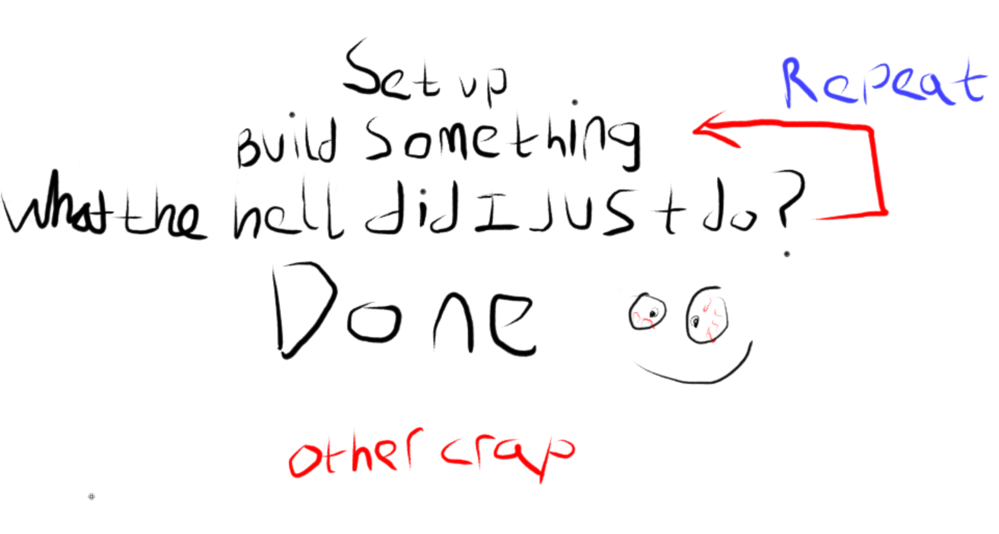
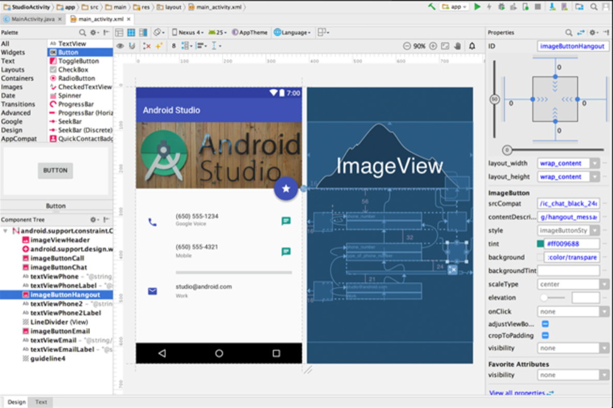
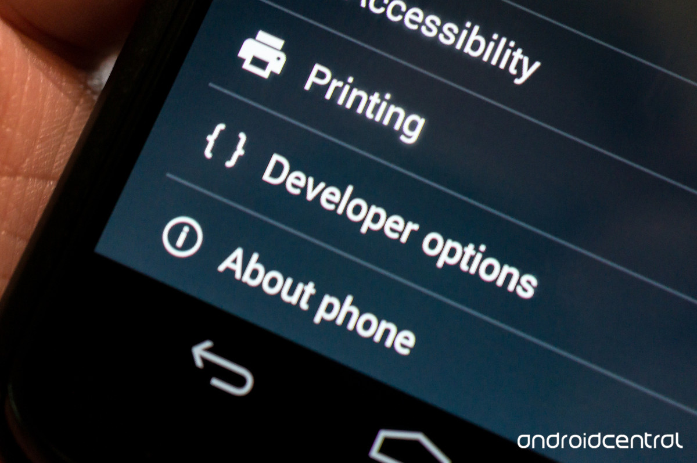
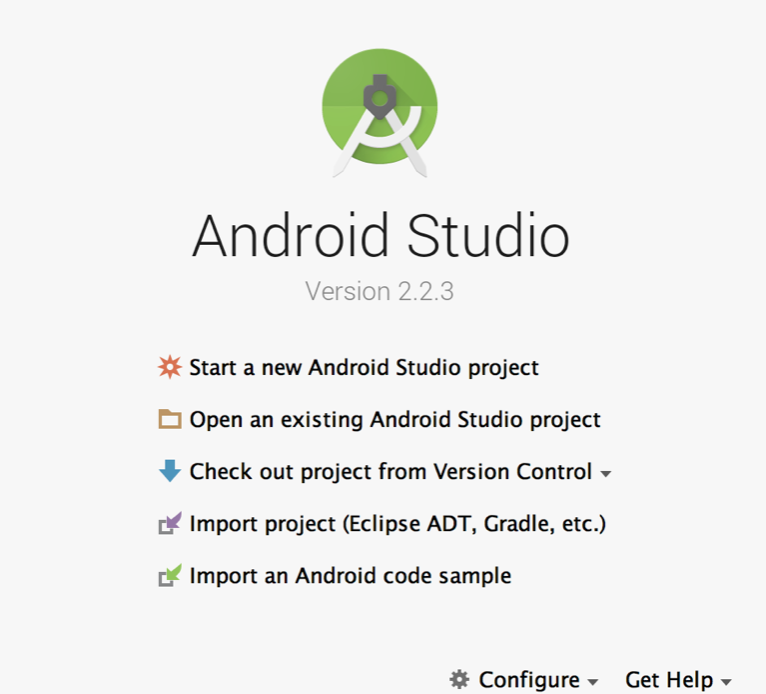

Why am I here?
Yea ok, I guess this isn’t the best way to start off a tutorial blog on app development, but if I didn’t say it, you were probably thinking it anyway. So why build an app if everyone and their gran is at it? And to further depress you - according to this link, 1 in 4 people abandon apps after only one use.Well for a start a LOT of people are working on apps, with an average of 701 apps released everyday as of last year.
In fact, unlike most industries in the west, App development business enjoys huge growth year on year, with more and more jobs becoming available in the field - there really isn’t a better time to learn app development to boost your career.
Building apps is a game changer for young start ups, its one of the few areas you can make a platform for success all on your own. You can learn the required skills in your spare time, you don’t need to spend money on certain licences, buy expensive equipment or have the right contacts. I would include links, but the list is so vast, I urge you to google ‘successful app stories’ if you are looking for more motivation.
That all said, the reason for failure (which as I alluded to earlier, is a rather large amount of people) can be summarised by the following:
Thats it, so really the same reason most products and services fail - the only difference here is most of the time the app developers didn’t lose millions.
In this tutorial, I am going to take you through the steps on how to build a Noodle Ordering App. Once complete, the App will allow the user to pick what kind of noodles they want and for how many people, display the total price and be allowed to submit their order. By the end of this tutorial set, you should have something that with a few tweaks you could actually release as a marketable product.
Boring primer Stuff
As with my other tutorials, we are going to learn by just bashing through it and building something that we can actually demo. At the end of this tutorial will be a deeper explanation of what we did, as well as a glossary of terms and useful links
If you think about it, something as big as app development could have you watching youtube tutorials or sitting in a classroom for weeks maybe months just learning the theory, layouts, standards etc. That said, I will explain where necessary as to not confuse you in a sea of code and bullshit.
The high level learning plan we will follow looks a bit like this:

So basically, we will work through a step, I will explain what we did and then repeat. At the end, there will be a more detailed explanation of the terms and logic behind our design.
{kind=link}
Setting Up - Install Android SDK
To start coding android apps, we need to install the Android SDK (Software Software Development Kit). This their official integrated development environment (IDE) - for the new coders, this is basically a giant application that has lots of built in tools for writing and running code on. You can write the code in here, test it via the interface or a link to your device (phone/tablet etc). It looks like this:

{kind=link}
Start your long installation process herelink. It is advisable to have Java already installed on your computer, and depending on the version you may need to install a JavaDevelopmentKit.
Enable Developer Mode on your mobile
If you don't have an android phone or you want to run the application on an emulator here is where you can get more information to do that, it should take no longer than 5 minutes to set up. Otherwise its a good idea to enable developer mode on your phone, this means you have access to 'secret squirrel' stuff normal people otherwise wouldn't be able to see. This method varies from phone to phone, but basically you have to find the location of 'Build number' (not model number). It is usually in the settings and about device option - for me it was close to the bottom. Once you find the build number, you need to tap it about 7 or 8 times. After x amount of times it will tell you how many steps away you are from being a developer. Once you have completed that step, you will now be able to access the secret squirrel developers options as shown below.

Once you have set it all up you can go here to try it out after setting up a project
Create A Project
Ok, now its time to get cracking. When you load up the SDK for the first time you should see something that resembles the pic below.
{kind=link}
Click on the ‘Start a New Android Studio Project’ option. On the Configure your new project screen, choose your application name (in this case, NaughtyNoodles) - the other fields don’t need to be changed. Now the only relevant option in the Target Android Devices page is keeping the minimum SDK as low as possible. If you wish to add cutting edge functionality, then it may not be supported by earlier versions. For the purpose of this tutorial, we will be using existing functionality - so its best to make our app supported on as many versions of Android as possible. For me, the lowest version I can get is ‘IceCreamSandwich).
Once you click finish, it will take some time for your project to fully load. Don’t get freaked out by the underlined code in red, it should disappear after the project has fully loaded.
Make a Background Image
If you are lost on the main development screen, click here to jump to a brief Description of the folder structure and layout.
The first thing we want to do is to have our App with a sleek background, in the case of the Noodle Order App - what more appropriate than a picture of a bowl of noodles with some veg and a nice fried egg on top?
The steps you will need to follow to make this work are:
- Find a picture for the background use (google images). Pick medium size, as if its too big it wont display when you load the app.
- Move/Save the Image to the correct location.
- Insert the Correct Code to make the Image Load when the App Initiates.
- Test the App by actually running it via the SDK.
OK, lets make it happen….
Once you have found your image of the right size, save it to the following place :
If you have named your app something different, then that folder name will appear instead of Naughty Noodles. Also you need to name the image noodle (as I refer to it in the later code by this name).
Now back to your Android SDK project screen. Make sure you have the Project Tab on the FAR left selected. Now navigate to your activity_main.xml file. It can be found by expanding the following folders - APP, res, Layout.
Delete any code that is inside and replace with the following code
<?xml version="1.0" encoding="utf-8"?>
<RelativeLayout xmlns:android="http://schemas.android.com/apk/res/android"
xmlns:tools="http://schemas.android.com/tools" android:layout_width="match_parent"
android:layout_height="match_parent"
tools:context=".MainActivity">
<ImageView
android:src="@drawable/noodle"
android:scaleType="centerCrop"
android:layout_width="match_parent"
android:layout_height="match_parent"
/>
</RelativeLayout>
Now its time to Run the code and see if it worked. To do this, all you need to do is connect your device via USB to your computer. Then select the green Play icon in the top Centre of the IDE, it says run app if you hover the mouse over it. Select your device and run. If you are having any issues locating your device or running the program, try the trouble shooting guide here.
Good Job! Your App should look something like below.
Got stuck? You can check out my Version (Up to this point) here.
Well done for making it this far! Now you are well on your way to completing your first mobile app.
{kind=link}
or click here to continue with part 2
Adam McMurchie 10/April/2017